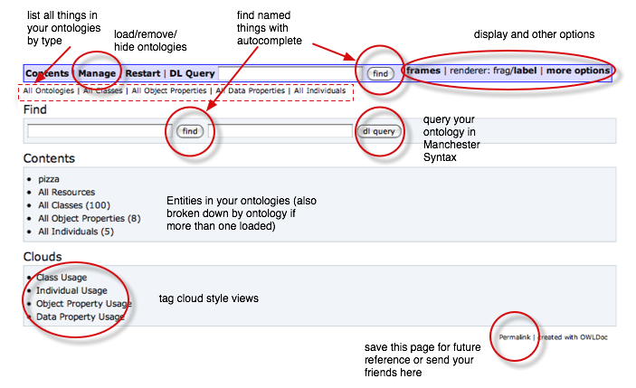

Ontology Browser v1.1.3
Index
Getting Started
To load an ontology (and its imports) into the browser, enter the physical location of the OWL file. This must be publicly accessible for the server to find it.
If you want to load local files or files on an internal network like the example on the right, you will have to download the server (see here for details of downloading the .war file) and run it locally.

The server will attempt to find any imported ontologies in the same folder as the root ontology and load these as well. If it cannot find them there, it will default to looking on the web at a URL matching the ontology URI.
If you still have any missing imports, you will be taken straight to the manage page where you can specify a different location for the missing ontologies.
You do not have to load missing imports - everything will behave as expected, and you can carry choose to ignore this step and go straight to browsing.
A good place to start is the content page.
Once an ontology has been successfully opened you will be presented with the contents page (right).
From here it should be easy to navigate around your ontology by class, property or individual. Alternatively, you can do a search on the name of the entity you are looking for. Autocomplete is implemented to help you with this.
Once you have ontologies loaded, at any time you can select or copy the permalink link and bookmark
it or send it to your friends. The permalink takes into account any settings you have updated, and includes
pointers to where you loaded the ontologies from.

If your ontology appears with lots of meaningless names (like right), it is possible that the human-intended labels are in annotations.
If this is the case, choose renderer:label in the top right of the toolbar.
By default, this will render entities using their
rdfs:label.
If you wish to change this, edit option_label_uri under more options and press return (see below).
Further options can be changed on this page. For example, options like DL Query can be disabled by setting reasoner.enabled to false or changing the css property to "alt.css" renders using a different stylesheet with larger fonts.
After editing a value, press return for the change to be made.
All options are saved along with the session data that is retrieved when a permalink is used.
API
The server has been written with a RESTful interface such that programmatic or user interaction is possible over HTTP. For example, an ontology repository (or a user's own HTML pages) could incorporate a link to the browser to show a particular ontology. Such a link might look like this:
http://rpc133.cs.man.ac.uk:8080/browser/manage/?action=load&clear=true&uri=http://www.co-ode.org/ontologies/pizza/2007/02/12/pizza.owl
This loads a particular ontology (pizza.owl) from the physical location specified by the uri parameter. This ontology (and its imports
replaces all existing loaded ontologies in this session because of the clear=true parameter.
Parameters
| URL | parameters | usage notes |
|---|---|---|
| manage/ |
action = [load|remove|reload|browse|hide|unhide] uri = the physical location the ontology (for loading) or the ontology URI otherwise clear = true in combination with load to dump all existing loaded ontologies |
browse makes the ontology and its imports closure active (much like the active ontology in Protege4). |
| find/ |
type = [entities|classes|objectproperties|dataproperties|individuals|ontologies] input = name search string * | |
| entities/ |
uri = the full URI of the entity baseURI = the base URI of the entity (without the #) name = the rendered name of the entity or the URI fragment of its identifier ontology = the URI of the ontology to produce an index for * |
If no parameters are specified, an index of all entities will be shown. if the baseURI is only specified, an index of all entities with that baseURI will be shown (NOT IMPLEMENTED YET). If the name is specified on its own the entity(ies) with that rendering will be shown. |
| classes/ |
see entities/ * | |
| objectproperties/ |
see entities/ * | |
| dataproperties/ |
see entities/ * | |
| individuals/ |
see entities/ * | |
| ontologies/ |
uri = the full URI of the ontology * | |
| query/ |
q = [subclasses|equivalents|instances|reciprocal-subclasses] class = the OWL class description * |
Reasoner query of the type specified. The OWL description can only be an intersection with named classes, existential/universal/value restrictions with named fillers |
| cloud/ | type = [class-usage|objprop-usage] | More to follow |
| signout.html | Kill this session, clearing all ontologies. | |
| option |
opt = [option] value = [value] |
Options ren: [frag|label] |
* - indicates that a format for the results can be specified: [xml|html|html-frag]
XML is of the form:
<results>
<rs id="[entity url]" info="[for future use]">[entity name]<rs>
</results>
html creates a full html page, with CSS and title etc
html-frag creates just the bit of html required to add to an existing page (useful for AJAX)
json may be supported in the future as an alternative to XML
Support
The Ontology server has been developed by the CO-ODE project.
Author: Nick Drummond, The University of Manchester
Bug reports: